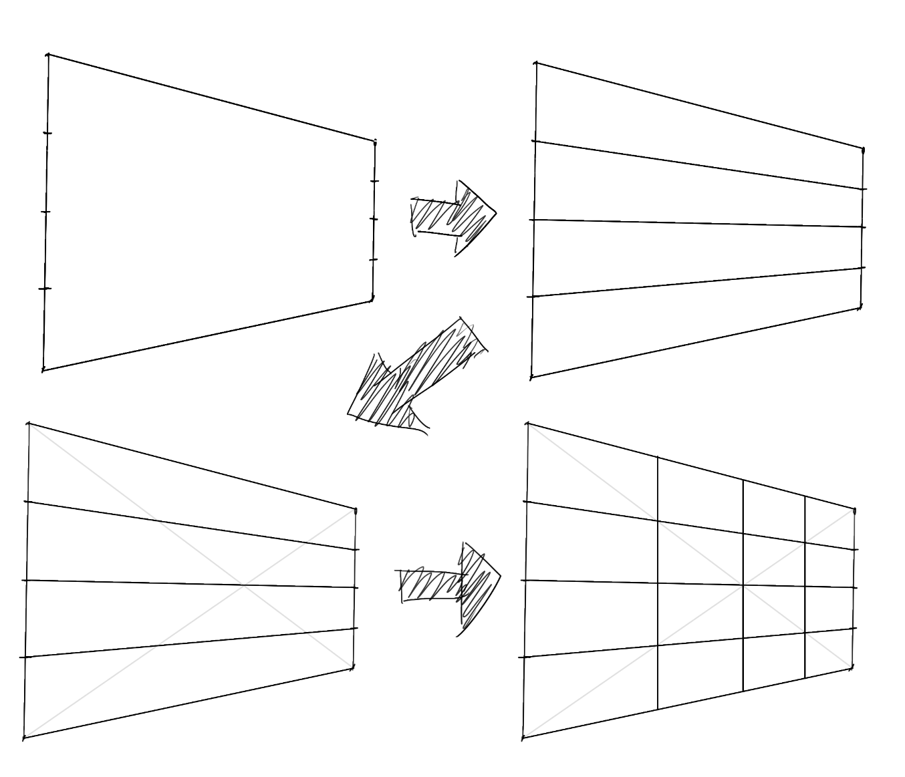
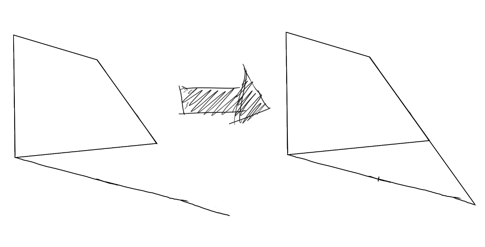

在透视方形中直接做宫格的方法
在一个透视中的矩形上做宫格是常见需求，通常我们做宫格来帮助我们进行旋转（如Krenz的十六宫格旋转系统，当然它要求这个矩形是正方形，这是另外的课题），以及手动的贴图法——将一个二维形状贴到三维的表面上，或者做对称……
平常是如何做宫格的？以十六宫格（最常见）举例，我们会打交叉，做平行线，得到四宫格，然后再对这四个宫格任取一个再做一次四宫格……但这里做平行线这一步，要求你拉透视线到消失点上，这就搞得相对麻烦一些。
这里介绍一种徒手可做的，尽量精确的，不需要拉透视线的做宫格的方法。这个方法启发自鲁米斯，但美术卷《透视》中其实也讲了。这个方法的误差或许主要来自于通过肉眼去二等分一条线段，注意到横线的二等分似乎比竖线的二等分更为精确。
首先，我们需要理解透视中的矩形可以分为三类：
- 两对边均是原线（原线即平行于画面的边缘），这样的矩形它看上去是矩形
- 一对边是原线，一对边是变线（变线即不平行于画面的边缘），这样的矩形它看上去是梯形
- 两对边均是变线，这样的矩形它看上去可能是任意的凸四边形
从上图可见：
- 一点透视，面向镜头的面是两对边均是原线的情况（水平的边，垂直的边均平行于画面，因为这个面本身就是平行于画面的），其他面是一对边是原线，一对边是变线的情况
- 两点透视，两侧面是一对边是原线，一对边是变线的情况（因为垂直的边平行于画面），顶面是两对边均是变线的情况
- 三点透视，所有面均是两对边均是变线的情况
两对边均是原线的情况
（其实这个情况打交叉拉平行线的方法更合适，不需要拉透视线，而且误差似乎更小）
透视矩形的两对边均是原线，这证明这个矩形是平行于画面的，这证明这个矩形在任意方向上均不存在透视缩短，因此，直接进行平面作图即可——在各边找到四等分，然后两两相连，或者，你也可以在相邻的两个边找四等分，然后沿每个点做邻边的平行线……这样似乎会更精确一些。这里的关键在于，按你的观感去调整，用眼睛找四等分可能会引入误差。
一对边是原线，一对边是变线
魔法要来了。
首先，对原线这对边（即下图的垂直边），我们知道，原线是平行于画面的，因此原线是不存在透视缩短的，因此这里直接用目测找四等分并相连即可：
那水平的边怎么处理？这里有两种方案——首先是直接做这个四等分，然后打整个矩形的交叉（这里也可以检验中间的二等分线是否画对了），在四个交点处做垂线：

容易意识到，这个方法能够让你做任意等分——只要你先在原线上做相应的等分，然后利用对角线映射到变线上即可。
而另一个方案则不利用垂直边，直接在水平边上做文章，因此这个方法同时适用于两对边均是变线的情况，所以在下面再讲。
两对边均是变线的情况
这个方法来自于 鲁米斯求任意深度的方法 的一种特殊情况（里面有一个交互式的示例可以看，将示例中的“右测量点”移到“B”点，就是下面提到的方法），这里直接讲这个特殊情况的画法，在最后我再扯点理论。
首先，我们有一个两对边均是变线的面：
以水平边方向为例（即上下的边），以底边为例，从底边的更近（即更远离消失点）的点出发，做顶边的画面上的平行线（注意，这里是画面上的平行线，而非空间上的，看上去差不多平行就行了）：
然后，延长更远的那个垂直边，直到和这根平行线相交。

最后，在这根平行线上直接做四等分（是的，这根平行线是一根原线，或者说我们硬说它是原线），然后，用矩形上最远的那个点，和各等分点相连，这些连线和底边的交点，即为在底边上的四等分点，
然后，对顶边进行同样的步骤，找到顶边的四等分点，再两两相连即可。
再然后，利用交叉去找到侧边的四等分点（这时候会发现二等分线找不到因为只有一个点，这时候可以使点巧劲）（当然，你也可以换个方向重复上面的步骤）。

上面的示例检查一下发现偏的还是有些离谱的hhh，毕竟找平行找等分也是要经验的，这时候应当让自己对消失点的直觉也上场去做修正。
关于鲁米斯方法
这个Krenz好像讲过了，但我……用自己的话再描述一遍吧。
一句话简述——鲁米斯方法，就是通过相似三角形的原理，让你把原线上的比例映射到变线上。
下图通过一个矩形地板（其实只需要利用这一条边而已）的透视图以及俯视图来描述鲁米斯方法：
看到这个俯视图，你可能会思考，我能不能让这个三角形是等腰三角形，让我直接把这条边的实际长度投影到原线上？确实是可以的，相应的方法称为测点法，但这里不表。
鲁米斯的方法有一个前提——我做的辅助线，全是在地面上的，但这个前提，其实是不必要的，取消这个前提，就能够得出上面的结论了。
本博客所有文章除特别声明外，均采用 CC BY-NC-SA 4.0 协议 ，转载请注明出处！